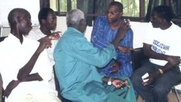

|
Njoobari, un jeu
de rôles sur les modes d'organisation et de
coordination des paysans sur des périmètres irrigués
au Nord du Sénégal
O.
Barreteau, F. Bousquet et W. Daré
Motivation de la création
 Ce jeu de rôles
a été développé pour traduire le Système Multi-Agent Shadoc, modèle informatique
développé pour comprendre les liens entre les modes de
coordination entre les paysans d'un système irrigué de
la moyenne vallée du Fleuve Sénégal et la viabilité de
celui-ci. Les concepteurs de ce modèle ont choisi de le
traduire en un jeu de rôles afin de le présenter aux
paysans enquêtés pour la constitution du modèle en
limitant le risque de barrière technologique. Cette
restitution du modèle aux paysans avait aussi comme
objectif de tester la validité du modèle du point de vue
d'acteurs représentés dans ce modèle et une
interrogation sur sa capacité à générer des discussions
entre des acteurs interagissant dans la réalité sur un
même système irrigué.
Description et spécificités
La dynamique de l'ensemble du jeu est basée sur le
partage de l'eau et du crédit. Le jeu se joue avec 10 à
15 joueurs. Il est constitué de cartes trilingues
(français, pulaar, wolof) décrivant les comportements
possibles pour chaque joueur et d'un ensemble de cartes
" occasion " reproduisant les aspects aléatoires du
modèle, représentant la pluri-activité des paysans. Il
nécessite un lieu séparable en deux parties isolées,
représentant l'une le village et l'autre le périmètre
irrigué (par exemple deux salles de classe d'une école).
Il nécessite également un tableau sur lequel est
représenté un périmètre irrigué, archétype des
périmètres de la moyenne vallée, dans lequel sont
situées des parcelles attribuées chacune à un joueur.
Les joueurs sont situés dans l'espace village et se
déplacent sur leur parcelle en fonction de leur objectif
de production et du tirage de la carte " occasion ".
Ceux qui vont sur leur parcelle décident des opérations
culturales, dont l'irrigation de leur parcelle en
fonction de leurs besoins et des arrangements
collectifs. Des abaques donnent les conséquences en
niveau d'eau puis en production de riz. Entre deux
campagnes ont lieu les phases de remboursement et de
recherche de crédit, moments clé des interactions entre
paysans des systèmes irrigués. Les rôles pris par les
joueurs sont dissociés de leurs rôles dans le monde
réel. Ils sont soit tirés au hasard, pour les rôles de
paysan, soit choisis collectivement pour les rôles de
responsable. Ils réfléchissent ainsi sur le jeu dans son
ensemble et non sur leur situation personnelle.
Mise en oeuvre
Le jeu a été joué dans un premier temps avec les
paysans des cinq systèmes irrigués enquêtés, permettant
de valider la représentation portée par le jeu et
d'observer les discussions générées sur les systèmes
réels. Il a été répété avec une dizaine de groupes de
joueurs de la vallée du Sénégal pour travailler sur les
interactions entre les dynamiques réelles et celles du
jeu. Il est aussi utilisé en formation dans des
contextes culturels variés avec étudiants et chercheurs.
Références
Pour en savoir plus, contactez
l'auteur.
|
|